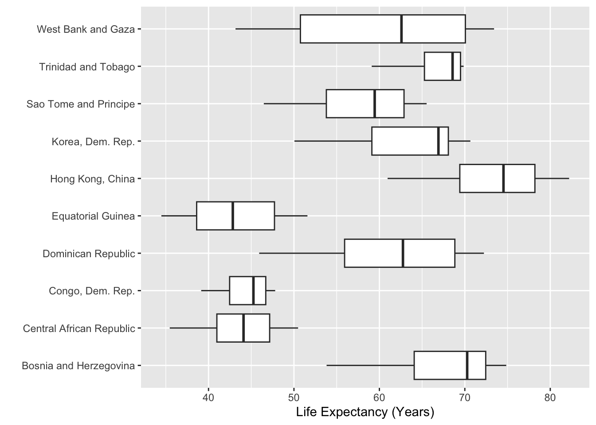
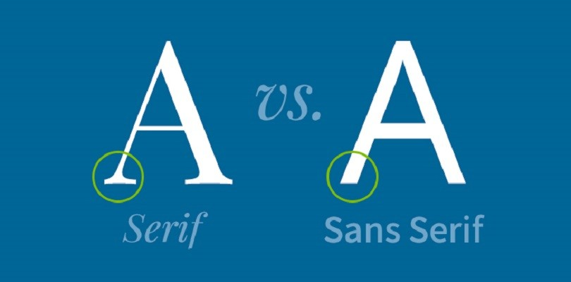
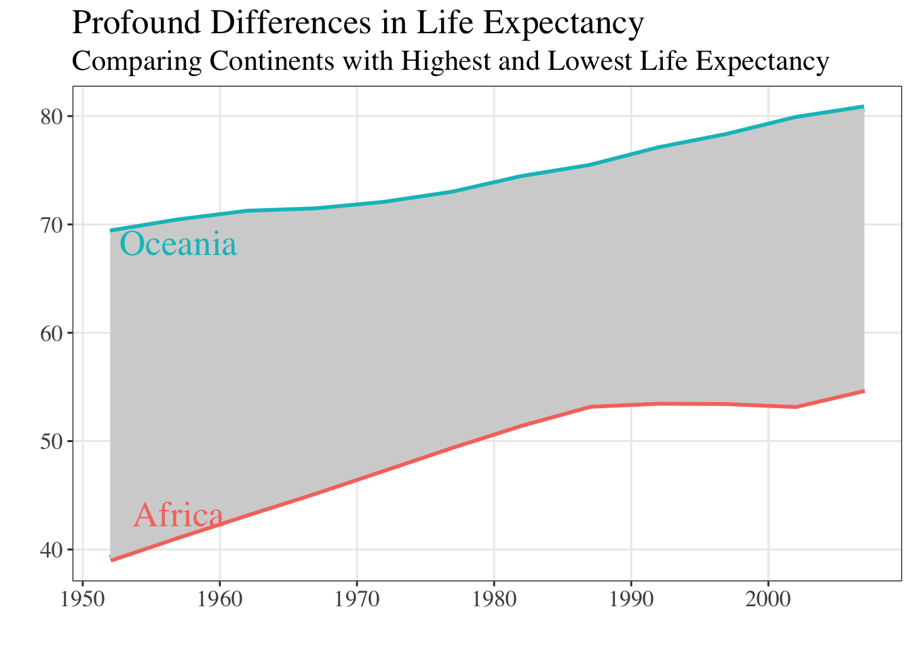
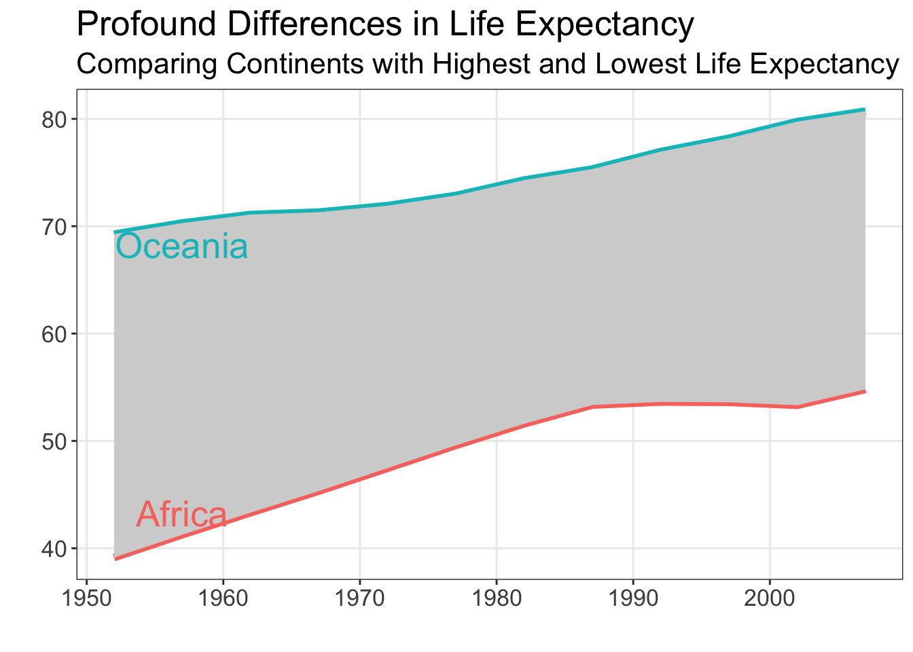
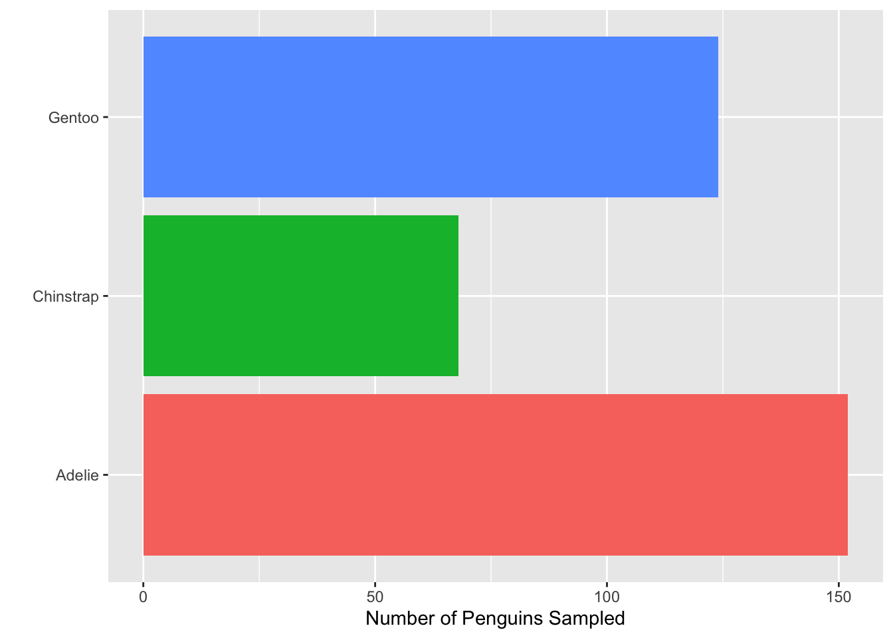
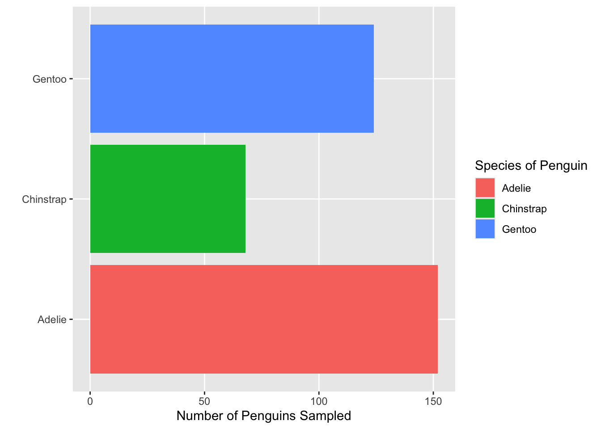
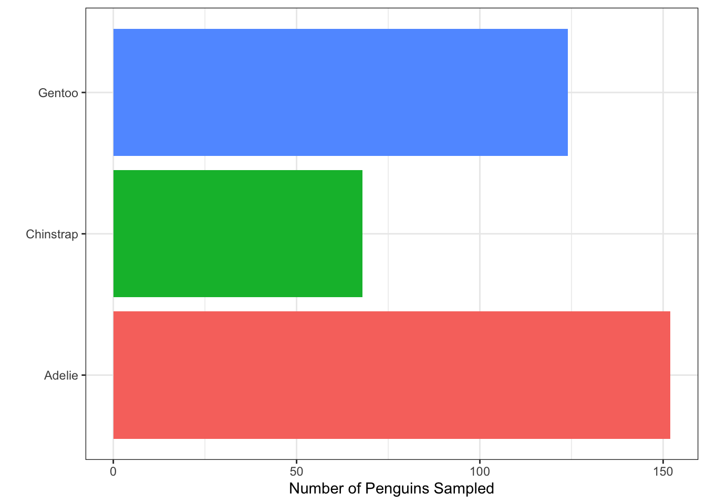
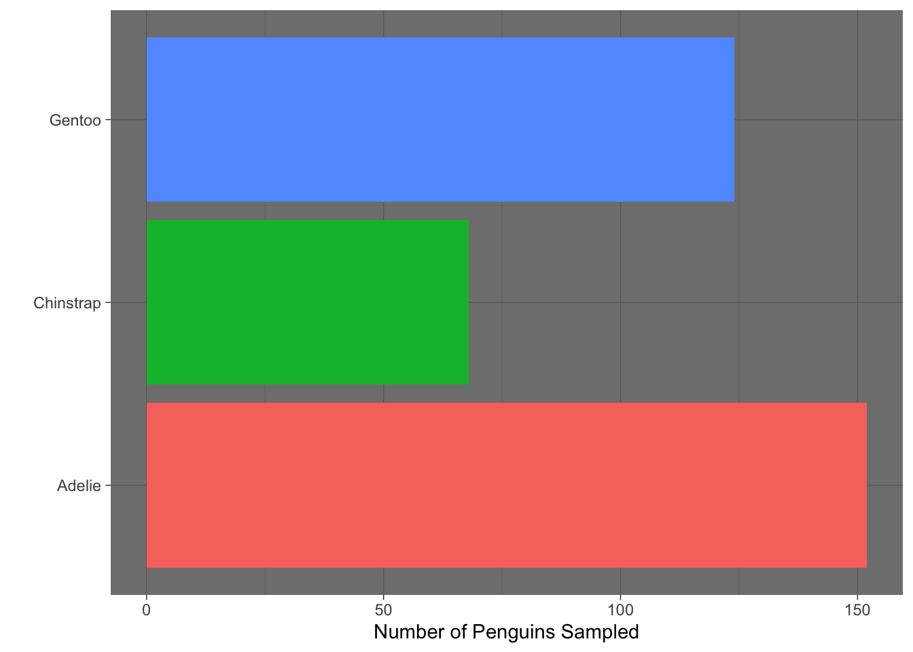
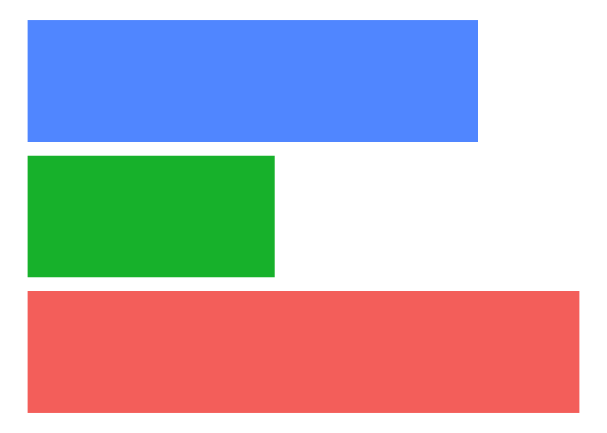

Professionally Styled Plots
Custom Colors and Themes
A huge part of making a compelling and convincing plot is your choice of color and layout. In this second part of the coursework, we are going to learn more about customizing colors and themes.
This is one of the best talks on simple ways to make your visualizations more clear and glamorous. We recommend watching the entire thing (maybe on a sunny walk or at the beach!), but if you can’t do the entire thing here are the main principles Will Chase outlines:
- Don’t make people tilt their head (to read your plot)
- Left align most of your text
- Lighten gridlines as much as possible and don’t use minor gridlines
- Legends suck
- Fonts matter
- Color is hard
Let’s work through each of these recommendations.
Don’t make people tilt their head
Let’s start with something simple! Not making people tilt their head to read your plot seems like an easy thing to do. We typically see plots that make people tilt their head when categorical variables have long names. For example, in the code below, we pull out the top 10 countries based on the length. We then compare the country’s life expectancy using side-by-side boxplots. As you can see, the names of the countries are illegible.
countris_to_keep <- gapminder |>
distinct(country) |>
mutate(name_len = str_length(country)) |>
slice_max(n = 10, order_by = name_len)
gapminder |>
semi_join(countris_to_keep, by = "country") |>
ggplot(mapping = aes(x = country,
y = lifeExp)
) +
geom_boxplot()
A “typical” fix is to tilt the names of the countries 45 degrees, like so:
gapminder |>
semi_join(countris_to_keep, by = "country") |>
ggplot(mapping = aes(x = country,
y = lifeExp)
) +
geom_boxplot() +
theme(axis.text.x = element_text(angle = 45, hjust = 1))
However, our plot now makes people tilt their head! A better fix is to move the countries to the y-axis, where the names have plenty of space. Viola!
gapminder |>
semi_join(countris_to_keep, by = "country") |>
ggplot(mapping = aes(y = country,
x = lifeExp)
) +
geom_boxplot() +
labs(x = "Life Expectancy (Years)",
y = "")
x and y axes so the long labels are easily read without tilting your head
You might have noticed something about a lot of the plots we’ve shown you in this coursework—many don’t have y-axis labels. The reason for this is twofold, first people always have to tilt their head to read the y-axis label. Second, many of these labels are not necessary because the variable is obvious.
Here, we don’t need a label that says “Country” because the y-axis values can clearly communicate that context. In Figure 10 of Non-Standard Geometries the y-axis didn’t have a clear context, but we included that context in a location where the reader didn’t need to tilt their head (the plot title).
Left align most of your text
This recommendation is very easy to follow when making plots with ggplot2 because left alignment is the default orientation for text. Sometimes we see students get excited at the idea of centering their plot title, but Will Chase (and your teachers) would recommend against it. Use that creative energy on finding great colors!
Lighten gridlines as much as possible
This documentation page provides a complete list of all the themes that are built into ggplot2.
If you want to go a bit deeper into the land of ggplot themes, this blog by Emanuela Furfaro provides great advice on how to make your own custom ggplot theme function.
Legends suck
In general, legends suck because they take people’s eyes away from your plot. Below, we present a few options for trying to address this issue.
Reordering Your Legend
If you must keep your legend, then you absolutely must format your legend so that the colors appear in the same order as they appear on the plot. When your legend is not in order, then it is substantially more difficult for people to read your plot, as seen in this amazing gist from Jenny Bryan.

The fct_reorder() and fct_reorder2() functions from the forcats package are the key tools for getting your legend to have the same ordering as your plot. In Figure 6 from Non-Standard Geometries, the legend did not appear in the same order as the plot. Let’s fix that using fct_reorder()!
gapminder |>
filter(continent %in% c("Oceania", "Africa")) |>
group_by(year, continent) |>
summarize(mean_life = mean(lifeExp, na.rm = TRUE),
.groups = "drop") |>
mutate(continent = forcats::fct_reorder(.f = continent,
.x = mean_life,
.desc = TRUE)) |>
ggplot(mapping = aes(x = year,
y = mean_life,
color = continent)) +
geom_line(linewidth = 2) +
geom_ribbon(data = ribbon_summaries,
mapping = aes(x = year,
ymin = mean_Africa,
ymax = mean_Oceania
),
position = "identity",
inherit.aes = FALSE,
fill = "lightgray") +
labs(x = "",
y = "",
title = "Profound Differences in Life Expectancy",
subtitle = "Comparing Continents with Highest and Lowest Life Expectancy",
color = "Continent") +
theme_bw() +
theme(panel.grid.minor = element_blank())![Line and ribbon plot titled ‘Profound Differences in Life Expectancy’ with the subtitle ‘Comparing Continents with Highest and Lowest Life Expectancy’. The x-axis shows years from the 1950s to the early 2000s, and the y-axis shows life expectancy. Two lines are shown: Oceania (upper line) and Africa (lower line), with a shaded region between them highlighting the gap. Both lines increase over time, and Oceania remains consistently higher than Africa. The legend lists the continents in an order that does not match their vertical position in the plot, making it less intuitive to connect colors to lines. The plot illustrates why reordering the legend to match the visual order of the lines improves clarity.](styled-plots_files/figure-html/fig-reorder-ribbon-1.png)
Embedding Your Legend in the Plot Title
If you can remove your legend, then there are two approaches you can take—adding the legend to the plot title or adding annotations to the plot. Let’s take a look at the first option, adding colors to your plot title.
The ggtext package allows you to add hex colors and other HTML elements (e.g., italics, boldface) to plot titles. The process involves two main steps:
Wrap your text in HTML tags within the
labs()function.Tell ggplot to render the HTML by adding
plot.title = element_markdown()inside thetheme()function.
Let’s see how this can look! I’ve added the hex colors for the two continents (from Figure 6 from Non-Standard Geometries) into the subtitle of my plot:
library(ggtext)
gapminder |>
filter(continent %in% c("Oceania", "Africa")) |>
group_by(year, continent) |>
summarize(mean_life = mean(lifeExp, na.rm = TRUE),
.groups = "drop") |>
ggplot(mapping = aes(x = year,
y = mean_life,
color = continent)) +
geom_line(linewidth = 2) +
geom_ribbon(data = ribbon_summaries,
mapping = aes(x = year,
ymin = mean_Africa,
ymax = mean_Oceania
),
position = "identity",
inherit.aes = FALSE,
fill = "lightgray") +
labs(x = "",
y = "",
title = "Profound Differences in Life Expectancy",
subtitle = "Comparison of <span style='color: #17b3b7;'>Oceania</span> and <span style='color: #f35e5a;'>Africa</span>") +
theme_bw() +
theme(
legend.position = "none",
plot.subtitle = element_markdown(),
panel.grid.minor = element_blank()
)![Line and ribbon plot titled ‘Profound Differences in Life Expectancy’ with the subtitle ‘Comparison of Oceania and Africa’, where the words ‘Oceania’ and ‘Africa’ are colored to match their lines in the plot. The x-axis shows years from the 1950s to the early 2000s, and the y-axis shows life expectancy. A teal line (Oceania) appears above a red line (Africa), with a shaded gray ribbon between them highlighting the gap. Both lines increase over time, and the gap remains large throughout. There is no separate legend; instead, the colored continent names in the subtitle act as direct labels for the lines.](styled-plots_files/figure-html/fig-html-subtitle-1.png)
Notice that the subtitle is still specified as a string. Inside the string there are HTML elements (<span>) that declare the colors of the text. For example, <span style='color: #17b3b7;'>Oceania</span> declares that the text “Oceania” should be printed with the color #17b3b7. The beginning of the span (<span) and the end of the span (</span>) declare when the coloring starts and ends.
There are a variety of ways you can get the hex codes for the colors in your plot. To grab the codes for these base ggplot colors, I used an online color picker (e.g., imagecolorpicker.com). If you are using non-default colors (e.g., the viridis or RColorBrewer packages), there are built-in functions for getting the hex codes (example below).
library(RColorBrewer)
brewer.pal(5, "Set2")[1] "#66C2A5" "#FC8D62" "#8DA0CB" "#E78AC3" "#A6D854"Removing Your Legend with Annotations
Maybe you feel like having the legend in the plot title is still difficult for people to read. We don’t disagree! It would be really easy for people to read the legend if it was included in the body of the visualization. Let’s explore that option!
Let’s first start with our base plot that we want to add annotations to:
Code
plot <- gapminder |>
filter(continent %in% c("Oceania", "Africa")) |>
group_by(year, continent) |>
summarize(mean_life = mean(lifeExp, na.rm = TRUE),
.groups = "drop") |>
ggplot(mapping = aes(x = year,
y = mean_life,
color = continent)) +
geom_line(linewidth = 2) +
geom_ribbon(data = ribbon_summaries,
mapping = aes(x = year,
ymin = mean_Africa,
ymax = mean_Oceania
),
position = "identity",
inherit.aes = FALSE,
fill = "lightgray") +
labs(x = "",
y = "",
title = "Profound Differences in Life Expectancy",
subtitle = "Comparing Continents with Highest and Lowest Life Expectancy"
) +
theme_bw() +
theme(
legend.position = "none",
panel.grid.minor = element_blank()
)
plot
Now that we have our base plot (saved as plot), we can explore adding annotations to the plot using geom_text(). Looking at the documentation for geom_text() you will notice that you must supply x, y, and label aesthetics. So, you need to have a dataframe with three columns indicating where to put the labels (x and y location) and what labels should be used. Let’s think about how to make this dataframe.
Based on Will Chase’s advice, we should consider adding annotations on the left (“left align most of your text”), somewhere around 1955. If we want the annotations to help people know what continent each line is associated with, it seems like we want the text to be close to the line. For consistency, let’s put both annotations inside the grey area.
annotate_text <- gapminder |>
filter(continent %in% c("Oceania", "Africa"),
year == 1957
) |>
group_by(year, continent) |>
summarize(y_lab = mean(lifeExp, na.rm = TRUE),
.groups = "drop") |>
# Move text based on what continent it is
mutate(
y_lab = y_lab + if_else(continent == "Africa",
2, # Move up for Africa (on bottom)
-2 # Move down for Oceania (on top)
)
)
annotate_text# A tibble: 2 × 3
year continent y_lab
<int> <fct> <dbl>
1 1957 Africa 43.3
2 1957 Oceania 68.3Now that we have our annotations, let’s put them on the plot!
![Line and ribbon plot titled ‘Profound Differences in Life Expectancy’ with the subtitle ‘Comparing Continents with Highest and Lowest Life Expectancy’. The x-axis shows years from the 1950s to the early 2000s, and the y-axis shows life expectancy. Two lines are shown: a teal line for Oceania (upper line) and a red line for Africa (lower line), with a shaded gray ribbon between them highlighting the gap. Both lines rise steadily over time. Instead of a legend, the plot includes direct text annotations near the lines: the word ‘Oceania’ in teal placed near the upper line and ‘Africa’ in red placed near the lower line. The annotation colors match the line colors, making the plot easy to interpret without a separate legend.](styled-plots_files/figure-html/fig-add-annotations-1.png)
Fonts matter
You may have missed it, but fonts have gotten an interesting amount of attention recently. There has been a longstanding debate between serif and sans serif fonts, centering primarily on readability, tone, and context of use.
Serif fonts have small decorative strokes (“serifs”) at the ends of letters.
- Examples: Times New Roman, Georgia, Garamond
Sans serif fonts do not have these strokes.
- Examples: Arial, Helvetica, Calibri

The Debate
Historically, serif fonts were considered easier to read in printed materials. The serifs were thought to:
- Guide the eye along lines of text
- Improve readability in long passages
- Create a more traditional or scholarly feel
Sans serif fonts became popular in digital contexts because they:
- Render cleanly at low resolutions
- Appear simpler and more modern
- Reduce visual clutter on screens
Modern readability research shows:
- Differences in reading speed and comprehension are usually small.
- Context matters more than serif vs. sans serif alone.
- Factors like font size, spacing, contrast, and layout often have a greater impact on readability.
In other words: there is no universal “better” choice.
Tone and Perception
Font choice strongly influences how a visualization feels:
| Serif | Sans Serif |
|---|---|
| Traditional | Modern |
| Formal | Clean |
| Scholarly | Minimal |
| Literary | Technical |
In data visualization, tone matters. A plot in Garamond feels very different from the same plot in Helvetica.
For plots specifically sans serif is often preferred because:
- It looks clean at small sizes (axis labels, legends)
- It works well on slides and dashboards
- It reduces distraction from the data itself
Bottom Line
The serif vs. sans serif debate is less about absolute readability and more about context, tone, and design goals. In data visualization, clarity and consistency usually matter more than the category of font itself.
When choosing a font for a visualization:
- Prioritize readability at small sizes.
- Ensure good contrast and spacing.
- Be consistent across figures.
- Match the font to the audience and context.
- Test how it looks when exported (PDF, PNG, slides).
Changing Your Plot Font
Let’s create the same plot in both a serif and sans serif font and compare clarity, tone, and legibility. Let’s take the last plot we saw (Figure 6) and modify the font.
You should notice that the default font in Figure 6 is san serif, but we never specified the font! ggplot2 does not have its own built-in font, rather it uses the system’s default “sans” font. For Windows, this default font is typically Arial, whereas for a Mac the default font is typically Helvetica.
We can change the font inside the theme() function, using the text argument.
Code
plot +
geom_text(data = annotate_text,
mapping = aes(x = year,
y = y_lab,
label = continent,
color = continent
),
inherit.aes = FALSE,
family = "Times",
size = 7
) +
theme(text = element_text(family = "Times", size = 16))
Code
plot +
geom_text(data = annotate_text,
mapping = aes(x = year,
y = y_lab,
label = continent,
color = continent
),
inherit.aes = FALSE,
family = "Arial",
size = 7
) +
theme(text = element_text(family = "Arial", size = 16)
)
You can run quartzFonts() in your console to see what fonts are (currently) installed on your computer. If that list isn’t long enough (or you are looking for a specific font), we recommend installing the systemfonts package. This package opens the door to many non-standard fonts.
Dr. Theobold’s favorite font is "Avenir". 🤓
Color is hard
There are so many color packages in R that all work with ggplot. Regardless of what colors you decide to work with, you will need to know:
- What aesthetic are the colors associated with (e.g.,
colororfill)? - Is the palette continuous (for a quantitative variable) or discrete (for a categorical variable)?
The answers to these two questions direct you toward what function you need to use to change the colors in your plot. For example, to change the colors in a filled area plot (like Figure 5 from Non-Standard Geometries) you would need to use a scale_fill_XXXX() function, whereas with a hexbin plot (like Figure 10) you would need to use a scale_color_XXXX() function.
We recommend poking around the Color Scales and Legends chapter of the ggplot2 book by Hadley Wickham. This chapter covers how color scales work, how to choose palettes, and how to customize them. The chapter even motivates the importance of choosing accessible color palettes that everyone’s eyes can see.
The number of color packages can get a bit overwhelming, which is why Emil Hvitfeldt put together a comprehensive list of color palettes in R. Check it out! Find the color palette that speaks to you! Is it the Apricot palette from the LaCroixColoR package?!
- Which of the functions below would you use to change the colors of the bars on the following plot?
![Horizontal bar chart showing the number of penguins sampled by species. The x-axis shows ‘Number of Penguins Sampled’, and the y-axis lists three species: Adelie, Chinstrap, and Gentoo. Each bar is filled with a different color and the legend on the right labeled ‘Species of Penguin’ matches colors to species. The plot includes both major and minor gridlines in the background. Darker major gridlines align with labeled axis ticks, and lighter minor gridlines appear between them (with no labeled ticks). Both sets of gridlines create a dense grid behind the bars.](styled-plots_files/figure-html/base-plot-1.png)
- Consider the plot in Question 1. What change was made to it in each step below? That is, what code would go inside the function
+ theme( )to produce the added change?


- Which built-in theme is each of the following plots? That is, what
theme_XXXX()function would produce the added change?



Which of the plots above (a, b, c, or d) best adheres to the principles outlined by Will Chase (in the Glamour of Graphics)?
None of the built-in ggplot themes completely adhere to the principles outlined by Will Chase. For the plot you chose in Question 4, what additional change(s) are necessary?